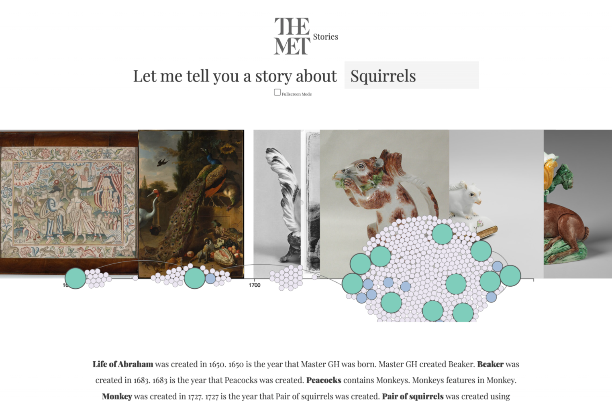

On display: how museums use data visualisation
Coordinate axes, clustering, bar chart, chronological line... No, we are not in a maths class or trying to master Excel. We're just examining a collection of works by Renaissance artists. This article is about how and why museums visualise data (and where it comes from in the first place).
This is a translation of an article originally published in the Системный Блокъ magazine.
Digitalisation is omnipresent: in practically any domain, analogue is gradually turning into digital.
The common trend is supported by museums, which are converting their collections into machine-readable format.
These large volumes of data on the cultural heritage of mankind have high potential for analysing and extracting new knowledge.
Yet, since museums perform not only an archival function, but also a leisure and educational one, visualisation is coming to the forefront.
Here is how museums use information design to uncover hidden meanings in their collections, engage the general public, and even create new artworks.
How museum collections become data
How are artworks digitised? In brief, physical objects are turned into 0's and 1's with the help of various scanners, cameras, video recorders, electrophones and special software. The distinctive feature of digitisation is that, in addition to the digital «twin» of a cultural object, it is possible to save all the information related to it (both from its card in the museum catalogue and from external sources) in the form of metadata. The resulting datasets can remain in the museum's internal system for storage and research by specialists or be made publicly available.
What visualisation has to offer
Even if a collection has been successfully digitised, the interface for interacting with it is often functionally limited. Usually, a digital collection is presented as a simple list of images with (not necessarily implemented) keyword search and/or filtering by date of creation, genre, country, etc. This approach misses an important property of the collection — that it is a unified structure, whose elements are interconnected and which has its own characteristics. This is where information design comes in. With the use of visual methods, it becomes possible to highlight patterns in the data and overall simplify the communication of information. In addition, visualisation can serve as a more effective and immersive alternative to conventional ways of navigating a visitor through an exhibition, such as guided tours, audio guides, plaques with text and paper catalogues.
Night at the museum — and day too
The coronavirus pandemic and other troubles of recent years have demonstrated how easily we can be cut off from many of the real-life pleasures that require our physical presence — including visiting museums. In such circumstances, interactive digital interfaces can serve as a «bridge» between the spectator and the collection, that preserves the ability to interact with it. Moreover, for collections born and existing exclusively in the digital environment, this is effectively the only point of access. For instance, The MET Stories project links individual works from the Metropolitan Museum of Art's half-million-strong online collection into a coherent story on a chosen subject, completed with an interactive timeline.
And in this project, researchers from the Potsdam University of Applied Sciences studied collections of 19th-century art and everyday objects from two state museums in Berlin. They combined them into a large cloud, which was further divided into genre-themed clusters by algorithmically calculating the «similarity» of objects based on their image and title.
Both works illustrate the important role of visualisation in exposing the connections between heterogeneous museum objects, helping to extract new meanings from long-established collections.
Augmented museum reality
On the other hand, data visualisation can be found right within the museum walls. For example, it acts as a supporting tool in the construction of the exhibition narrative, used by curators to enhance the visitor experience. An impressive example of an interactive museum interface is the mARChive project, which is a stereoscopic 360-degree visualisation that allows visitors to explore the entire Victoria Museum collection in Melbourne in an immersive way.
Finally, the data itself can also act as an exhibition object. At the XXII Milan Triennale, the Accurat design studio presented an installation The Room of Change to draw attention to the changes occurring in the environment. The team transformed multiple datasets on global demography, epidemiology and ecology into a large-scale data-driven «wallpaper» that became not just an accompanying material for the exhibition, but an art piece in itself.
In conclusion
Data can be found everywhere — including such unexpected places as museums. By utilising the best practices of information design, cultural institutions can create interactive interfaces based on this data, allowing them to take a fresh look at the myriad of cultural objects that humanity has accumulated throughout its history. In addition, such interfaces have the potential to promote interest in cultural heritage and broaden the audience of museums. After all, the introduction of visualisation in such places promotes mass data literacy — and the ability to read and understand graphs is a super-valuable skill in a world ruled by data.
Sources
- MET Stories // Neil Oliver. URL: https://neil-oliver.github.io/Major-Studio-1/New-Context/.
- Visuelle Exploration zweier musealer Sammlungen // Christopher Pietsch, Viktoria Brüggemann, Mark-Jan Bludau, Marian Dörk. URL: https://visualisierung.smb.museum/.
- mArchive // Jeffrey Shaw, Sarah Kenderdine, David Chesworth, Dennis Del Favero, Tim Hart. URL: https://www.jeffreyshawcompendium.com/portfolio/marchive/.
- Broken Nature portrait #3: Accurat — The Room of Change // XXII Triennale Milano 2019. URL: http://www.brokennature.org/broken-nature-portrait-3-accurat-the-room-of-change/.